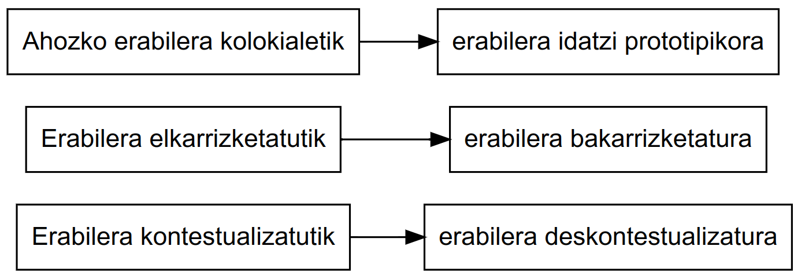
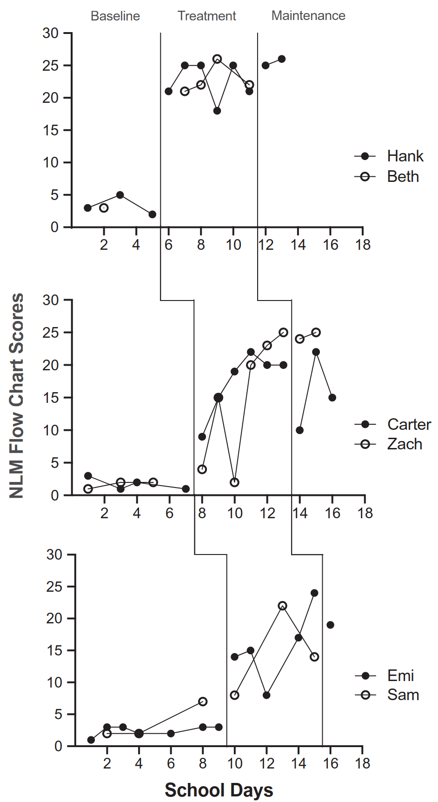

5 Ahozko hizkuntza Haur Hezkuntzan
Our data provide us, however, a first approximation to the absolute magnitude of children’s early experience, a basis sufficient for estimating the actual size of the intervention task needed to provide equal experience and, thus, equal opportunities to children living in poverty.
– The 30 Million Word Gap By Age 3 - Hart eta Risley (2003)
Hart eta Risley-ren ikerketak (2003) agerian jarri zuen umeen lehen urteetako hizkuntza-esperientzien arteko aldea ikaragarria dela. Jatorri kultural baxuagoko familietako umeek, 3 urte betetzean, goi-mailako baliabideak zituzten familietako umeen aldean, 30 milioi berba gutxiago entzuten zituztela ondorioztatu zuten. Hitz-esperientzia horien gabeziak eragina du haurren hizkuntza-garapenean eta, ondorioz, ikaskuntzan eta bizitzako aukeretan. Eta irakasle gaiari ere eragin behar lioke hizkuntza-arduradun izango den neurrian
Umeek mundua ezagutzeko, gizartean parte hartzeko eta ikaskuntza eraikitzeko lehen baliabidea ahozko hizkuntza da. Horregatik, Haur Hezkuntza etapako ardatzetakoa da hizkuntzaren garapena; ikasleen garapen linguistiko, kognitibo eta sozialaren funtsezko zutabea.
Ahozko hizkuntzaren lanketaren bidez haurrek aukera dute beren pentsamendua antolatzeko, esperientziak partekatzeko, besteen ideiak entzun eta ulertzeko, eta jakintza kolektiboa eraikitzeko. Eskolak, beraz, ezin du soilik ahozko hizkuntza bitarteko natural gisa hartu; aldi berean, ahozko hizkuntza ikasteko eduki eta helburu didaktiko nagusi ere bada.
Gainera, ahozko hizkuntza da, neurri handian, idatzizko hizkuntzarako zubi nagusia ere bada. Haurrek ahozko esperientzia aberats eta gidatuen bidez eskuratzen dituzte gero irakurketan eta idazketan baliatuko dituzten estrategiak. Haur Hezkuntzan, hortaz, ahozko hizkuntza ez da arlo baten jarduera partikularra, baizik eta curriculum osoan zehar hedatzen den ikasteko eta irakasteko tresna.
5.1 Etxetik eskolara
Etxea eta eskola testuinguru ezberdinak dira; nahiz eta batean zein bestean hizkuntza ikasten dugun, inguruneen arteko aldeek baldintzatzen dituzte ikasteko aukerak eta bertan ikasitakoa ere bai. Horregatik, garrantzi handikoa da bi esparru horien ezaugarriak alderatzea eta bakoitzaren berezkotasunak ezagutzea, ulertzeko umeek nola egiten duten trantsizioa eta zer eskakizun berriri egin behar dieten aurre eskolara iristean.
5.1.1 Etxeko ezaugarriak
Etxea umeen lehen ikaskuntza-testuingurua da, eta bertan hizkuntzaren transmisioa modu natural eta espontaneoan gertatzen da. Haurrek gurasoekin eta hurbilekoekin partekatzen dituzten harreman afektiboek hizkuntzaren ikaskuntza baldintzatzen dute, eta elkarrizketak, jolasak zein eguneroko jarduerak hizkuntza-esperientzia aberats bihurtzen dituzte. Horregatik, etxeko testuinguruan lortutako hizkuntza-gaitasunak izango dira eskolako ikasketarako oinarrizko euskarri.
- Banan-banako interakzioak nagusitzen dira.
- Ikaskuntza espontaneoa da; ez dago aurrez planifikaturik.
- Elkarrizketak eta ikaskuntza umeen interes eta beharretatik abiatzen dira. Normalean helduekin egiten dituzten jarduerekin lotuta daude.
- Elkarrizketa-gaiak umearen bizitzarekin eta esperientziekin lotura estua dute.
Etxeko esperientziaren bidez haur guztiek eskuratzen dituzte oinarrizko baliabide linguistikoak eta ahozko erabilera kontestualizatuetan trebetasuna. Hala ere, haur batzuentzat kultura idatziarekin lehen harremanak ere etxean bertan hasten dira (ipuinak entzutea, liburuak ikustea, kantuak edo bertsoak entzutea), eta horrek aurrerago eskolan izango duten hizkuntza-garapenean eragina izan dezake.
5.1.2 Eskolako ezaugarriak
Eskola umeentzat ingurune berria da, ezaugarri berriak dituenak ; bertan hizkuntzaren erabilera baldintza eta helburu desberdinen mende dago. Umeek aurkitzen dute testuinguru egituratuago bat, bertan hizkuntza ez da soilik komunikatzeko baliabidea, baizik eta ikaskuntzaren tresna eta aldi berean ikasteko eduki nagusi. Horrek iradokitzen du hizkuntzaren erabilera eskolan askotan urrunago dagoela etxeko esperientzietatik, eta horrek zailtasunak zein ikaskuntza-aukera berriak sortzen dizkie haurrei.
- Irakasleak ume talde handi batekin egiten du lan, eta umeen arteko interakzioak gero eta garrantzitsuagoak dira.
- Ikaskuntza planifikatua da, helburu eta jarduera zehatzekin.
- Umearen esperientzia eremua zabaltzen da: arreta gai edo jarduera batean jartzen eta eusten ikasi behar du, askotan bere eguneroko esperientziatik urrun dauden edukiekin.
- Eskolako ikaskuntza ez dago beti testuinguru hurbilarekin lotuta, eta horrek hizkuntza-erabilera abstraktuagoak eskatzen ditu.
Eskolak, beraz, eskatzen du:
- Trebetasuna hizkuntzaren erabilera deskontestualizatuan eta abstraktuan.
- Forma linguistiko konplexuen erabilera.
- Curriculumeko edukiekin loturiko hiztegi espezifikoa ezagutzea.
- Umeen eguneroko esperientziatik urruntzen diren gaiei buruz hitz egitea eta jardutea.
- Mezuaren hartzailea irudikatzea, aurrez aurre egon beharrik gabe.
Eskolako hizkuntzaren praktika horiek, hasieran zailak izan daitezkeen arren, haurren gaitasun linguistikoak aberasten dituzte eta ahozko erabilera formalerako lehen urratsak suposatzen dituzte.

5.2 Ahozko hizkuntza eta eskola
Eskola umeen hizkuntza-esperientziak aberasteko eta sistematizatzeko testuinguru nagusia da. Etxean haurrek ahozko komunikazioari loturiko oinarrizko trebetasunak modu naturalean eskuratzen badituzte ere, eskolak hizkuntzaren erabilera forma berrietara hurbiltzen ditu: diskurtso abstraktuagoetara, kontzeptu zehatzetara eta ikaskuntza-prozesuan lagungarri izango diren komunikazio-moduetara.
Horregatik, ahozko hizkuntza ezin da soilik ikasleen artean gertatzen den elkarrizketa gisa ulertu. Eskolan, ahozko hizkuntza aldi berean da ikaskuntzarako tresna —gai akademikoak lantzeko, kontzeptuak argitzeko, pentsamendua garatzeko— eta ikaskuntzaren eduki nagusietako bat —umeek beraiek hizkuntza formalagoa erabiltzen ikasi behar baitute.
Askotan egiten den ahozkoaren eta idatziaren arteko bereizketa ez da erabat erreala. Gehienetan bi dimentsioen arteko ezaugarriak nahasten dira: ahozko testu batzuek idatziaren ezaugarriak dituzte, eta testu idatzi askotan ahozkoaren kutsua sumatzen da. Horregatik, gero eta gehiago erabiltzen da “continuum” kontzeptua, ahozkoaren erabilera kontestualizatuenetatik idatziaren erabilera abstraktu eta deskontestualizatuenetaraino doan eskala bat irudikatzeko.
Eskolak haurrei aukera eskaintzen die continuum horretan aurrera egiteko, ahozko erabilera kolokialetik formalerantz, eta hortik idatzizko komunikaziorako jauzia egiteko. Horretarako, ezinbestekoa da hizkuntza-erabilera askotarikoak proposatzea, umeei hizkuntza modu naturalean erabiltzeko aukera emateaz gain, erabilera formal eta akademikoetara hurbiltzeko aukera ere eskaintzen dietenak.
5.2.1 Ahozkoa ↔︎ Idatzia: continuum batean
Eskolan ez da nahikoa ahozko eta idatzizko hizkuntzaren artean bereizketa zorrotza egitea; izan ere, benetako komunikazio-testu gehienek bi erregistroen ezaugarriak konbinatzen dituzte. Adibidez, ahoz esandako azalpen batek planifikazioa, egitura logikoa eta hiztegi espezifikoa izan ditzake, eta idatzizko testu batek, berriz, espontaneotasun eta ahozkotasun arrastoak izan litzake.
Hori dela eta, continuum baten irudia da egokiena: alde batean ahozko erabilera guztiz kontestualizatua dago, eta bestean idatziaren erabilera abstraktu eta deskontestualizatua. Eskolaren zeregina da haurrei aukera ematea continuum horretan mugitzen ikasteko, ahozko erabilera kolokialetik abiatuta, baina pixkanaka ahozko erabilera formalago eta idatziaren antzekoagoetara hurbilduta.
Continuum horren kontzientzia izateak aukera ematen die irakasleei jarduera egokiak planifikatzeko, umeek ez baitute saltorik egin behar batetik bestera: trantsizioak egin behar dituzte, eta horietan esperientzia, elkarrizketa gidatuak eta jarduera akademikoak oinarrian daude.
Formaltasun mailak
Ahozko hizkuntzaren erabilerak ez dira beti berdinak; aldatu egiten dira egoeraren arabera, eta batez ere testuinguru sozial eta komunikatiboaren arabera. Ez da gauza bera lagun artean kalean hitz egitea edo irakasleari azalpen bat ematea. Horregatik, eskolan garrantzitsua da umeei erakustea hizkuntzaren formaltasun maila desberdinak, eta egoeraren arabera nola moldatu hizkuntza.
| + | - |
|---|---|
| Espazio publikoa | Espazio pribatua |
| Harreman hierarkikoa | Berdinen arteko harremana |
| Gai espezializatua | Eguneroko gaiak |
| Planifikazio handiagoa | Espontaneitate handiagoa |
| Inpertsonala | Inplikazio pertsonal handiagoa |
| Zuzentasun formala | Balizko akats formalak |
| Lexiko teknikoa | Lexiko arrunta |
| Aldaera estandarraren erabilera | Aldaera dialektalen erabilera |
Eskolan, haurrek esperimentatu egiten dute formaltasun maila ezberdinekin: jolastokiko hizkuntza kolokialetik hasi eta ipuin baten kontaketan edo azalpen akademiko batean behar den hizkuntza formalagoa landu arte. Formaltasun mailen aniztasun hori ulertzea eta praktikan jartzea gakoa da, umeek egoera bakoitzean egokienak diren baliabide linguistikoak hautatzeko gaitasuna garatu dezaten.
Ahozko hizkuntza(k)
Ahozko hizkuntza ez da errealitate bakarra eta homogeneoa; askotariko erregistro eta erabilera biltzen ditu. Batetik, badugu ahozko erabilera kolokiala, lagunartean edo familia-giroan modu naturalean garatzen dena, inolako planifikaziorik gabe eta testuinguru konkretuaren laguntzaz. Bestetik, ahozko erabilera formala dago, akademikoa edo instituzionala; horrek idatziaren zenbait ezaugarri ere bereganatzen ditu (planifikazioa, egitura argia, lexiko zehatzagoa…).
Ahozko erabilera kolokiala haurrek modu naturalean ikasten dute, baina ahozko formala garatzeko ezinbestekoa da eskolaren esku-hartzea: entrenamendu sistematikoa, hausnarketa gidatua eta egoera komunikatibo formalen praktika. Hain zuzen, Haur Hezkuntzan bertan hasten da ahozko hizkuntza formalaren lehen hurbilketa.
Ikasgelan, beraz, bi maila bereizten ditugu:
- Harremanetarako hizkuntza (erabilera ez-formala, egunerokoa).
- Hizkuntza akademikoa (erabilera formala, eskolan sistematikoki landu beharrekoa).
| Harremanetarako hizkuntza | Hizkuntza akademikoa |
|---|---|
| Etxean eta kalean modu espontaneoan garatzen da | Eskolan ikasten da, modu sistematikoan |
| Testuinguru ez-linguistikoaren laguntza du | Ez dauka testuinguru ez-linguistikoaren laguntzarik |
| Esanahia negozia daiteke | Esanahia testuan bertan dago |
| Sintaxia eta egitura sinpleak | Sintaxia eta egitura konplexuak |
| Lexiko arrunta eta ezaguna | Lexiko espezifikoa eta konplexua |
| Kognitiboki eskakizun gutxikoa | Kognitiboki eskakizun handikoa |
Eskolak, hortaz, haurrei aukera eman behar die hizkuntza kolokialetik abiatuta pixkanaka hizkuntza akademikora hurreratzeko. Bide horretan, elkarrizketa, ipuinen kontaketa eta talde-lana funtsezko tresnak dira.
5.3 Ahozko hizkuntza formala HHn?
Erregistro baten edo bestearen erabilera ez da hizkuntzaren ezaugarrien araberakoa soilik; faktore sozial eta komunikatiboek baldintzatzen dute: norekin egiten den berba, zertaz, zein espaziotan… Haur Hezkuntzako ikasgelak, berez, toki erdipublikoak dira: ez zeharo pribatuak, ez erabat publikoak. Hurreko giroa bilatzen da, baina irakaslearen eta ikasleen artean badago nolabaiteko hierarkia, nahiz eta lotura afektiboek distantzia hori murriztu.
Gainera, Haur Hezkuntzan gero eta gehiago egiten da presente ez dagoenaz berba, umeen eguneroko esperientziatik urruntzen diren gaiez, eta hori bide garrantzitsua da ahozko hizkuntza formalaren garapenerako. Era berean, umeek hizkuntza idatziarekin dituzten lehenengo harremanek (ipuinen entzunaldia, poemak, abestiak edo kontakizunak) lagundu egiten dute ahozko hizkuntza formalerako jauzian.
Horregatik, Haur Hezkuntzan hasten da ahozko formalaren lehen hurbilketa garrantzitsua. Ez da eremu akademikoari lotutako hizkuntza formala oraindik, baina bai da bide horretara eramango duten lehen urratsen tokia.
5.3.1 Eskola giroko ahozko formalaren adibide praktikoak
Ahozko formalaren erabilera Haur Hezkuntzan ez da berez sortzen; irakasleak bideratu eta sustatu egin behar du. Horretarako, gelan testuinguru eta jarduera egokiak diseinatzea giltza nagusia da. Jarduera horiek ez dute zertan akademikoegiak izan; garrantzitsuena da haurrek hizkuntza modu zehatzago, esplizituago eta antolatuagoan erabili behar izatea.
Adibide batzuk:
- Ipuinen kontaketa dialogikoa: irakasleak kontakizuna egiten duen bitartean, haurrei galderak egiten dizkie, haien hipotesiak eta interpretazioak jasoz.
- Talde txikietan eztabaidak: gai zientifiko edo kultural baten inguruan (adibidez, animaliak, uraren zikloa, jai kulturalak) umeek azalpenak eman eta iritziak partekatzeko aukera dute.
- Jolas sinbolikoak: dendara, medikura edo autobusera joatearen simulazioa. Horrelako jardueretan haurrek hizkuntza sozial eta formalen konbinazioa erabili behar dute.
- Ipuin edo istorioen antzezpena: haurrek pertsonaien hitzak eta jarrerak esplizituki errepikatzen dituzte, eta horrek hizkuntza formalagoa praktikatzeko aukera ematen die.
Horrelako egoerek aukera ematen dute haurrek pixkanaka hizkuntza kolokialetik hizkuntza formal eta akademikora hurbiltzeko, modu naturalean baina gidatutako esperientzien bidez.
Gelarako gako batzuk
- Anbiguotasuna eta zehaztasun falta gainditu dezaten, honakoak eskatu: azalpenak eta birformulazioak, erantzun esplizituak, …
- Umeek euren adierazpenaren eta portaera komunikatiboaren kontzientzia hartzea sustatu
- Ikasleen arteko solasaldia bultzatu: hau da, korroan normalean erradiala izaten den interakziotik denen artekora igaro
- Irakasleak berak erabiltzeaz gain, umeei baliabide linguistikoak irakatsi
- argibideak, errepikapenak, birformulazioak eskatu ditzaten (ez dizut ulertu, errepika dezakezu?, zer esan nahi du?,…)
- beren interbentzioaren izaera modu argian agertu dezaten (ideiak azaltzeko, iritziak emateko –nik uste dut, nire iritzia esan nahi dut…‐, proposamenak egiteko –nik uste …egin beharko genukeela, proposamen bat egin nahi dut‐, …
5.4 Ahozko hizkuntzaren erabilerak eta funtzioak eskolan
Eskolan ahozko hizkuntzak funtzio ugari betetzen ditu: eskolako bizitza soziala erregulatzea, ikasteko eta pentsatzeko baliabide izatea, irakurtzeko eta idazteko laguntza eskaintzea, hitz egiteko gaitasuna bera lantzea eta jolasa zein gozamena ahalbidetzea. Funtzio horietako bakoitzak garrantzia du umeen garapenean; denak batera hartuta osatzen dute hezkuntzaren ahozko hizkuntzaren ingurua.
Lehenik eta behin, ahozko hizkuntza ezinbestekoa da eskolako bizitza soziala erregulatzeko eta elkarrekin bizitzeko. Haurrek hizkuntza erabiltzen dute arauak negoziatzeko, jarduerak antolatzeko eta gatazkak konpontzeko. Horrela, hizkuntza bera elkarbizitzarako tresna bihurtzen da, eta egoera formalagoetan erabiltzen den hizkeraren bidez haurrek forma linguistiko berriak ere ikasten dituzte.
Bestetik, ahozko hizkuntza da ikasteko eta pentsatzeko baliabide nagusia. Elkarrizketan ikasleek euren ideiak azaltzen dituzte, besteenak entzun eta konparatzen dituzte, eta esanahiak negoziatzen dituzte. Prozesu horretan, aurretik erabilitako argudioak berriro aztertzen dira, ikuspegi berriak eraikitzen dira eta ikasleek ezagutza kolektiboan parte hartzen dute. Elkarrizketak, gainera, jarreren eta baloreen inguruan hausnartzeko bidea ematen du.
Ahozko hizkuntzak laguntza handia eskaintzen du irakurtzeko eta idazteko gaitasuna eskuratzeko ere. Irakurtzea ez da soilik deszifratzea: testuak ulertu eta interpretatzeko gai izan behar du irakurleak; horretarako inferentziak egin, hipotesiak sortu eta informazio berria aurretiko ezagutzarekin erlazionatu behar ditu. Prozesu horietan guztietan ahozko elkarrizketak funtsezkoak dira. Gauza bera gertatzen da idazketan: testuak ekoizteko prozesuan planifikazioa eta berrikuspena behar dira, eta bi horiek ahozko interakzioetan oinarritzen dira.
Horrez gain, ahozko hizkuntza bera lantzeko ere erabiltzen da hitz egitea. Umeek ez dute berez garatzen ahozko erabilera formala; ikasi egin behar dute solaskidearen beharrak kontuan hartzen, zehatzagoak izaten eta diskurtsoa modu autonomoan eraikitzen. Horretarako, entrenamendua eta irakaskuntza sistematikoa beharrezkoak dira, elkarrizketaren bidez batez ere.
Azkenik, ahozko hizkuntzak jolas eta gozamenerako ere balio du. Jolas sinbolikoan haurrek pertsonaien rolez jabetzen dira, egoera komunikatibo berriak esperimentatzen dituzte eta hizkuntza modu ludikoan erabiltzen dute. Horrela, hizkuntza bizipen atseginekin lotzen dute eta beren sormen linguistikoa garatzen dute.
Guzti horregatik diogu ahozko hizkuntza eskolan aldi berean dela Ikasteko tresna eta Ikasteko edukia.
Ikasgelako elkarrizketek, beraz, ez dute soilik komunikazio funtzioa; ikaskuntza bera ahalbidetzen dute, haurrek beren pentsamendua eta hizkuntza aldi berean garatuz.
5.5 Ahozko hizkuntza lantzeko orientabideak
Eskolan ahozko hizkuntza lantzea ez da jarduera isolatua, baizik eta ikasgela osoaren antolaketan eta eguneroko praktikan txertatu behar den dimentsioa. Irakasleak kontuan hartu behar du umeek hizkuntza modu naturalean eta esanguratsuan erabiliko dutela, baldin eta horretarako espazio, denbora eta egoera egokiak eskaintzen bazaizkie. Hori dela eta, hainbat ikerketek azpimarratu dute, besteak beste Huarte eta Ozerinjauregik (2012), hizkuntzaren garapenerako ezinbestekoa dela interakzioa modu planifikatuan eta aberatsean sustatzea, bai talde handiko, bai talde txikiko nahiz buruz buruko egoeretan. Ondorioz, ahozko hizkuntzaren garapenerako orientabideek hiru ardatz nagusi izan behar dituzte: espazioaren eta denboraren antolaketa, hizkuntzaren garapenerako hezkuntza-egoerak eta irakasleak erabil ditzakeen estrategiak eta baliabideak.
Umeek hizkuntza modu eraginkorrean ikasteko behar dute giro aberatsa eta komunikatiboa, hizkuntzak funtzio desberdinak betetzeko balio duen giroa, alegia. Horrek esan nahi du hizkuntza ez dela soilik gai linguistiko edo akademikoetan erabiltzen den zerbait, baizik eta eskolako bizitza osoan zehar etengabe aktibatzen den tresna: jolasean, jarduera akademikoetan, taldeko dinamikan, arauak adostean edo gatazkak konpontzean.
Horrez gain, ezinbestekoa da umeei egoera komunikatibo askotarikoak eskaintzea: bakarka, bikoteka, talde txikian eta talde handian; irakaslearekin eta ikaskideen artean. Aniztasun horrek bermatzen du umeek hizkuntzaren funtzio guztiak lantzeko aukera izango dutela: informazioa partekatu, azalpenak eman, ideiak argudiatu, emozioak adierazi edo erabakiak justifikatu.
Atal honetan sakonduko ditugu orientabide nagusi horiek, hainbat azpiatalez osatuta:
Espazioaren eta denboraren antolaketa.
Hizkuntzaren garapenerako hezkuntza-egoerak
HH klasean lantzeko adibide bat
Hizkuntzaren erabilera jarduera motari lotua
Hizkuntzaren garapenerako hezkuntza-egoeren osagarriak
Elkarrizketa
Estrategia batzuk
5.5.1 Espazioaren eta denboraren antolaketa
Ikasgelako espazioaren eta denboraren antolaketa ez da bigarren mailako elementua; ahozko hizkuntzaren garapenaren oinarrian dago. Umeek hizkuntza erabiliko dute baldin eta horretarako aukera eta beharra sortzen bazaizkie. Horregatik, gelaren diseinuak eta jardueren antolaketak ere baldintzatzen dute zenbateraino izango den aberatsa ikasleen hizkuntza-esperientzia.
Bigas-ek (2000) azpimarratzen du umeek komunikazio-gaitasuna garatzen dutela hizkuntza erabiliz berarentzat esanguratsuak diren jarduera askotarikoetan, betiere irakaslearen eta ikaskideen laguntzarekin. Gelako antolamenduak, beraz, ahalbidetu behar ditu komunikazio-egoera aberatsak, toki bat non haurrek hitz egin beharko duten erabakiak hartzeko, ekintzak antolatzeko, informazioa partekatzeko, arazoei irtenbideak bilatzeko, arrazoiak emateko edo denboran ordenatutako azalpenak eskaintzeko.
Ez dira, ordea, ahozko truke guztiak berdin baliagarriak hizkuntza eta pentsamenduaren garapenerako. Horregatik, irakasleak jarduerak diseinatu behar ditu haurrek elkarren artean lankidetzan jarduteko beharrizana izan dezaten. Horretarako lagungarri dira taldekatze anitzak: talde handiak, talde txikiak, bikoteak edo banakako jarduerak, irakaslearekin zuzenean edo ikaskideen artean. Aukera ugari horiek hizkuntzaren erabilera askotarikoa sustatzen dute eta haurrei beren hizkuntza baliabideak egoera komunikatibo desberdinetan probatzeko aukera ematen diete. Huartek eta Ozerinjauregik (2012) ere azpimarratzen dute talde handiko, talde txikiko eta buruz buruko elkarrizketen arteko konbinazioak aukera paregabea eskaintzen duela haurrek hizkuntza modu esanguratsuan erabiltzeko eta irakasleak laguntza egokia eskaintzeko.
Hori guztia kontuan hartuta, ikasleen arteko komunikazioak ez du soilik hizkuntza-gaitasunaren garapenean laguntzen; ikaskuntzan eta taldean bizitzen ikastean ere laguntza ezinbestekoa ematen du.
5.5.2 Hizkuntzaren garapenerako hezkuntza-egoerak
Ahozko hizkuntzaren garapena eskolan ez da berez gertatzen ikasle guztien kasuan berdintsu; irakasleak sortu behar ditu ikasgelarako egokiak diren egoera komunikatibo esanguratsuak.Bost dimentsio nagusi dira kontuan hartu beharrekoak: eguneroko bizitzari lotutako egoerak, korroko eta txokoko egoerak, curriculumeko edukietara lotutako egoerak, ikastetxeko bizitzan sortzen diren egoerak eta jarduera kulturalen inguruko egoerak.
Eguneroko bizitzari lotutako egoeretan sartzen dira eskolako errutina txikiak: sartzeak eta irteerak, egunaren hasierako eta bukaerako erritualak, jardueren arteko trantsizioak edo hamarretako/hamaiketakoa. Egoera horiek errepikakorrak dira eta modu naturalean haurrei hizkuntza formula sozialak praktikatzeko aukera ematen diete.
Korroko eta txokoko egoeretan elkarrizketa kolektiboa, ipuinen kontaketa eta antzezpena, jolas sinbolikoa (etxea, denda, medikua…), arte plastikoa edo esplorazio-jarduerak sartzen dira. Horiek guztiak haurrei aukera ematen diete hizkuntza modu askotariko eta espontaneoan erabiltzeko, testuinguru ludiko eta sortzailean.
Curriculumeko edukiekin lotutako egoerek ikasgai zehatzak eta proiektuak dituzte ardatz. Kasu horietan, haurrek informazioa bilatu, ideiak azaldu eta eduki kontzeptualak hizkuntzaren bidez landu behar dituzte, ahozko hizkuntza ikasteko eta jakintza eraikitzeko tresna bihurtuz.
Ikastetxeko bizitzan sortzen diren egoeretan patioan gertatzen diren jolasak, eskolako jaia prestatzea edo jantokirako arauak adostea sar daitezke. Egoera horiek hizkuntza erabilera sozialki esanguratsuekin lotzen dira, eta haurrek modu erreal eta kooperatiboan erabiltzen dute hizkuntza.
Azkenik, jarduera kulturalen inguruko egoerek hizkuntza tradizioekin eta adierazpen kulturalekin uztartzen dute (Olentzero, Inauteriak edo beste ospakizun kultural batzuk). Horrek balio handia du haurrek hizkuntza bere testuinguru kulturalean bizitzeko eta aberasteko.
Bestalde, gogoratu behar da ez dagoela ikuspegi bakarra. Esaten baterako, Direcció General d’Ordenació i Innovació Educativa eta Departament d’Educació (2004) lanean bestelako sailkapen bat proposatzen da, hizkuntza lantzeko eduki semantikoak, forma linguistikoak eta erabilera komunikatiboak azpimarratuz. Horrek erakusten du hizkuntzaren garapena ulertzeko eta antolatzeko hainbat modu daudela, eta irakasleak ikuspegi horiek osagarri gisa erabil ditzakeela.
Edukia / Nozioak zertaz egiten den berba: munduaren ezagutza –semantika- |
Forma fonologia, morfologia, sintaxia, .. |
Erabilera/Funtzioak berba zertarako egiten den |
|---|---|---|
| Jarduerari loturiko kontzeptuzko eta prozedurazko edukiak (antzezpena, gonbidapena eta oharrak, abestia, ….) | Kausa-ondorio harremanak adierazteko formak: -(e)lako -berokia janzten dugu hotz delako- | Ekintza erregulatzea: jarduera antolatzea, laguntza eskatu eta eskaintzea, … |
| Lexikoa: jardueraren araberakoa | Denbora harremanak adierazteko formak: lehenengo, gero, egun batean, …. | Informatzea: deskribatzea, azaltzea, kontatzea, sentimenduak eta emozioak adieraztea, … |
| Denbora eta espazio nozio eta harremanak, kausazkoak, ondoriozkoak, … | Ekintza adierazten duten aditzak: pintatu, moztu, …. | Hipotesiak egitea - Funtzio ludikoa (plazer hutsez abestea, adibidez) |
| Galderazko perpausak: zer …?, nor ….?, non …? | Eskertzeko/zoriontzeko formula sozialak praktikan jartzea | |
| Hizkuntzaren alderdi suprasegmentalak: intonazioa, erritmoa | ||
| Eskertzeko formulak: eskerrik asko, mila esker, … |
5.5.3 HH klasean lantzeko adibide bat
Hezkuntza-egoerak ez dira soilik teoriatik ulertu behar; praktikan txertatzen direnean hartzen dute benetako balioa. Ikasgelan nola sortu daitezkeen hizkuntza egoera aberatsak erakusteko, ikasgeletako jardunaren analisiak ematen du zentzua.
Egoera abiapuntua izan ohi da gai baten inguruko elkarrizketa da. Haurrek proposatzen dute zeri buruz ikasi nahi duten, eta irakasleak aukera hori baliatzen du hizkuntza aberats eta esanguratsuaren erabilera sustatzeko. Guk ikasgelan Markinako Bekobenta ikastetxeko hartzaren adibidea aztertuko dugu. Hartzaren inguruan ikerketa egitea, baina, literaturan eta hainbat gelatan ikusiko dugun kasua da.
Lehenik eta behin, K-W-L taulak erabiltzen dira: zer dakigu? zer jakin nahi dugu? zer ikasi dugu? Jarduera horrek haurrei aukera ematen die beren ezagutzak antolatzeko eta ikerketa prozesuan galderak sortzeko. Ondoren, haurrek hartzari buruzko ideiak jasotzen dituzte kartulina handi batean, informazio partekatua bilduz eta ahoz azalduz.

Behin galderak sortuta, informazioa bilatzeko baliabideak aktibatzen dira. Horretarako, hainbat iturri erabiltzen dira: elkarrizketak, liburuak, irakasleak edo gurasoek irakurritako kontakizunak, mapak munduko hartzen habitatak ikusteko, naturako behaketak elikadurari buruzko azalpenak egiteko, eta matematikako jarduerak hartzen pisua eta neurria kalkulatzeko1.
Prozesu horretan haurrek hizkuntza modu askotarikoetan erabiltzen dute: galderak egiteko, azalpenak emateko, informazioa antolatzeko, aurkikuntzak konpartitzeko eta hausnarketak partekatzeko. Egoera horrek erakusten du ahozko hizkuntza ez dela jarduera isolatua, baizik eta curriculum osoko edukietan errotzen den dimentsioa, edukia izateaz gain.
5.5.4 Hizkuntzaren erabilera jarduera motari lotua
Ahozko hizkuntzaren erabilera ez da bera jarduera guztietan; jardueraren izaerak baldintzatzen du hizkuntzaren funtzioa eta konplexutasuna. Arnau-k (1999) bi jarduera mota nagusi bereizi zituen: jarduera akademikoak eta jarduera sozialki esanguratsuak. Bere proposamena baliagarria da ikasgelan hizkuntza lantzeko moduak ulertzeko.
Haur Hezkuntzako jarduera akademikoetan helburu nagusia praktika bera da, askotan edukien esanahia bigarren planoan utzita. Jarduerotan trebetasun linguistiko jakin batzuk garatzen dira, adibidez, zenbatzeko trebetasuna edo perpaus egiturak errepikatzea. Hala ere, hizkuntza askotan modu sinplifikatuan erabiltzen da, ikasleen erantzunak monosilaboetara mugatuta egoten dira, eta elkarrizketa irakasleak gidatzen du erabat. Horrela jarduteak ikaslea rol pasiboan kokatzen du eta hizkuntza aukerak mugatu egiten ditu.
Jarduera sozialki esanguratsuetan, ordea, helburua ez da hizkuntza bera praktikatzea, baizik eta hizkuntzaren bidez benetako helburu komunikatiboak lortzea. Jarduera horiek aukera ematen dute hizkuntza askotariko funtzioetan erabiltzeko: informazioa partekatzea, iritziak ematea, arazoak konpontzea edo proposamenak egitea. Elkarrizketa orekatuagoa da, ikasleek rol aktiboagoa dute, eta hizkuntza konplexuago eta aberatsago erabiltzea eskatzen zaie. Horrek guztiak hizkuntzaren garapenerako aukerak hazten ditu eta ikasleak subjektu aktibo bihurtzen ditu ikaskuntza-prozesuan.
Ikuspegi horrek irakasleei erakusten die ez dela nahikoa jarduera formal edo akademikoak egitea. Beharrezkoa da, gainera, egoera sozialki esanguratsuak proposatzea, umeek hizkuntza bizitzaren testuinguru errealetan erabiltzeko aukera izan dezaten.
5.5.5 Hizkuntzaren garapenerako hezkuntza-egoeren osagarriak
Ahozko hizkuntzaren garapena sustatzeko ez da nahikoa egoera komunikatiboak sortzea; garrantzitsua da, halaber, egoera horien osagaiak eta baldintzak ondo diseinatzea. Haurrek eskola-hizkuntza modu eraginkorrean ikasteko, hainbat elementu kontuan hartu behar dira.
Lehenik, irakasleak jakin behar du haurrek lehen pausoak emango dituztela ahozkoaren formaltasunetan. Ez da erabilera hori modu naturalean garatzen; laguntza eta orientazioa behar dira, elkarrizketa aberatsen bidez, hizkuntza tresna gisa erabiltzeko ohitura eta gaitasuna eskuratzeko.
Bigarrenik, hizkuntza bera ikasteko eta pentsatzeko tresna ere badela gogoan izan behar da. Horregatik, eskolako jardueretan elkarrizketa aberatsak sustatu behar dira; haurrek horietan aukera izango dute azalpenak emateko, hipotesiak planteatzeko, arrazoiak emateko eta ideiak konpartitzeko. Horrelako interakzioetan pentsamenduaren eta hizkuntzaren arteko lotura indartzen da.
Hirugarrenik, hizkuntza idatzira hurbiltzeko, ahozko hizkuntzak duen garrantzia azpimarratu behar da . Testu idatziak ulertzeko eta sortzeko lehenengo urratsak ahozko esperientzia gidatuen bidez egiten dira. Haurrek ahozko azalpenen eta kontakizunen bidez ikasten dute informazioa antolatzen eta diskurtsoari koherentzia ematen, gero idatzian aplikatuko duten trebetasuna. Kirby, Spencer, eta Chen (2021) lanean Kasu Bakarreko Diseinuan oinarrituta zenbait ikasleren ahozko eta idatzizkoaren arteko hartueman indartsua erakusten da.

Laugarrenik, ezin da ahaztu ahozko hizkuntzak elkarbizitzarako duen balioa. Haurrek hizkuntzaren bidez negoziatzen dituzte arauak, gatazkak konpontzen dituzte eta harreman afektiboak sendotzen dituzte. Horrek hizkuntza bera elkarbizitza demokratiko eta kolaboratiboaren tresna bihurtzen du.
Azkenik, literatur baliabideek eta jolas linguistikoek ere osagai garrantzitsua dute hizkuntzaren garapenean. Ipuinak, poemak, abestiak eta hizkuntza-jolasak alderdi ludikoaz gain funtzio pedagogiko garrantzitsudunak dira; hizkuntza aberasteko, sormena sustatzeko eta haurrei hizkuntzaren alderdi estetikoa ezagutarazteko, hain zuzen.
5.5.6 Elkarrizketa
Haurrek elkarrizketaren bidez ikasten dute beren ideiak azaltzen, besteenak entzuten, esanahiak negoziatzen eta diskurtsoa aberasten. Ez da, ordea, modu naturalean garatzen den trebetasuna; entrenamendua, hausnarketa eta gidaritza behar ditu haurrak.
Sánchez-Cano-k (2009) azpimarratzen du elkarrizketak ekarpen garrantzitsuak dituela hiru arlotan. Lehenik, komunikazio-trebetasunen garapenean. Haurrek ikasi behar dute elkarrizketan modu egokian parte hartzen, denon aurrean hitz egiten eta besteek diotena errespetatzen. Horretarako, beharrezkoa da aktiboki entzuteko gaitasuna, txandak errespetatzea eta gaiari eusten jakitea.
Bigarrenik, elkarrizketak aukera eskaintzen du alderdi linguistikoak garatzeko. Haurrek aukera dute euren hizkuntza-baliabideen mugak antzemateko, esandakoa birformulatzeko, laguntza jasotzeko eta hobekuntzak txertatzeko. Ahozko truke horietan fonologia, morfosintaxia, lexikoa eta diskurtsoaren antolamendua hobetzen dira.
Hirugarrenik, elkarrizketa ikaskuntzarako baliabide gisa funtzionatzen du. Irakaslearekin eta ikaskideekin hitz eginez haurrek ezagutza eraikitzen dute, kontzeptuak sakontzen dituzte eta pentsatzeko moduak aberasten dituzte. Elkarrizketaren bidez haurrek ez dute soilik hizkuntza lantzen; pentsamendua eta ikaskuntza ere garatzen dituzte.
Elkarrizketa ezin da ulertu hizkuntza lantzeko espazio gisa bakarrik: haurrek pentsatzeko eta ikasteko hizkuntza ere bertan garatzen dute. Horretarako, irakasleak estrategiak erabili behar ditu umeen esperientziak eta emozioak hizpide bihurtzeko, eta prozesu kognitibo elaboratuagoak aktibatzeko.
5.5.7 Estrategia batzuk
Elkarrizketak haurrei hizkuntza garatzeko aukera ematen die, baina helduak gidatzen ez badu, askotan umeek komunikazio sinplean gelditzeko arriskua dago. Horregatik, beharrezkoa da estrategiak erabiltzea, elkarrizketa aberatsago eta esanguratsuago bihurtzeko. Estrategia horien bidez haurrek beren esperientziak, emozioak eta pentsamenduak hizkuntza bidez adierazteko aukera izango dute, eta horrek hizkuntzaren dimentsio linguistikoak eta kognitiboak batera garatzen laguntzen du.
Bi estrategia multzo nagusi proposatzen dira: batetik, gertaerak haurrek bizi dituzten esperientziekin eta emozioekin erlazionatzea ahalbidetzen dutenak; bestetik, prozesu kognitibo elaboratuagoak aktibatzera bideratutakoak. Bi multzo horiek ez dira baztertzaileak, eta elkarren osagarri izan daitezke elkarrizketa aberatsak sortzeko. Ildo berean, Huarte eta Ozerinjauregik (2012) aldamiaia estrategiak azpimarratzen dituzte: afektiboa (haurraren segurtasuna eta komunikatzeko gogoa pizten duena), hizkuntzaren erabilerakoa (ekoizpenak aberasten eta zuzentzen laguntzen duena) eta kognitiboa (hizkuntzaren gaineko hausnarketa sustatzen duena). Estrategia horiek guztiek haurrek komunikazio egoeretan aurrera egin dezaten eta hizkuntza modu esanguratsuan barnera dezaten laguntzen dute.
Ondorengo azpiataletan bi estrategia multzo horiek azalduko dira xehetasun handiagoz.
5.5.8 Esperientziekin erlazionatzeko estrategiak
Elkarrizketetan haurrek hizkuntza erabil dezaten modu aberats eta esanguratsuan, lagungarria da gertaerak euren bizipen eta emozio propioekin erlazionatzeko aukera ematea. Horrelako estrategiek hizkuntzaren erabilera pertsonalizatzen dute eta haurrek beren ezagutza eta sentimenduak hizpide bihurtzeko bidea irekitzen dute.
Irakasleak, adibidez, ipuin baten inguruan galderak egin ditzake haurrek kontakizuna beren esperientziekin lotzeko: “Zuri inoiz gertatu zaizu horrelakorik?”, “Ikusi duzu inoiz antzekorik?”. Halaber, irakasleak bere esperientzia pertsonalak partekatu ditzake, haurrek lotura egiteko ereduak izan ditzaten.
Beste estrategia bat da kausa-ondorio erlazioak ezartzea erraztea. Horretarako, galderak egin daitezke (Zergatik uste duzu gertatu dela?) edo ereduak eman (Nik uste dut hori gertatu dela…). Umeek, hala, azalpen argiagoak eta esplizituagoak ematen ikasten dute.
Elkarrizketetan emozioak eta sentimenduak ere hizpide izan behar dira. Irakasleak galdera irekiak erabil ditzake haurrek pertsonaien emozioak ulertu ditzaten (Zelan uste duzu sentitzen dela pertsonaia?), eta bere sentimenduak ere partekatu (Ni ere mintzen naiz hori gertatzen zaidanean). Horrela, haurrek beren emozioak adierazten eta besteenak ulertzen ikasten dute.
Azkenik, garrantzitsua da haurrek hartutako erabakiei buruzko gogoeta ere egitea. Irakasleak galdetu dezake ea erabakia egokia izan den, edo haurrek beraiek bestelako erabaki bat hartuko luketen. Horrelako elkarrizketek haurrei aukera ematen diete euren arrazoibideak hizkuntzaren bidez azaltzeko eta iritziak esplizituago adierazteko.
5.5.9 Prozesu kognitibo elaboratuagoetarako estrategiak
Elkarrizketek aukera ematen dute haurrek pentsamendu sakonagoak garatzeko, betiere helduak galdera eta proposamen egokiak egiten baditu. Horretarako, estrategiak behar dira haurrek hipotesiak formulatzeko, irtenbideak bilatzeko, perspektiba desberdinak hartzeko eta esperientzia berriak irudikatzeko. Irakaslearen lana, hain zuzen.
Lehenik, gertaerei buruzko hipotesiak eta iragarpenak egitea susta daiteke. Irakasleak galdetu dezake: Zer uste duzu gertatuko dela?, Zer pasatuko litzateke…?. Halaber, ereduak eman ditzake Nik uste dut gero horrela gertatuko dela…, haurrek beren aurreikuspenak egiteko laguntza izan dezaten.
Bigarrenik, istorioetan edo jardueretan agertzen diren gatazkak konpontzeko estrategiak erabil daitezke. Galderak izan daitezke: Zer egin genezake hori konpontzeko?, Zein litzateke modurik honena?. Horrela, haurrek arazoei irtenbide desberdinak proposatzen ikasten dute, arrazoiketaz baliatuz.
Hirugarrenik, beste pertsonen tokian jartzea eta haien perspektiba hartzea ere landu behar da. Irakasleak galdetu dezake: Nola uste duzu sentitzen dela orain?, edo egoera berriak proposa ditzake: Politikaria izan nahi zenuke?, Zergatik bai edo zergatik ez?. Horrelako jarduerek haurrei enpatia garatzen laguntzen diete eta hizkuntza baliatzen dute pentsamendu soziala lantzeko.
Azkenik, antzezpenak aukera ematen du istorioak eta pertsonaiak bizitzeko, narrazioaren hariari jarraitzeko eta pertsonaien sentimenduak adierazteko. Antzezpenaren planifikazioak, gainera, haurrei irtenbideak bilatzen, hipotesiak egiten eta erabakiak ebaluatzen irakasten die. Antzezpenaren bidez haurrek hizkuntza erabiltzen dute bai arrazonamendua garatzeko bai emozioak adierazteko.
Ariketa nagusia
Azaldu, testuetan oinarrituz eta zure hitzekin, nola lantzen den ahozko hizkuntza Haur Hezkuntzan eta zer zailtasun edo erronka sor daitezkeen.
Ariketan lau atal nagusi izango dituzu:
1. Ahozkoa eta bere erabilera eskolan.
2. Espazioaren antolaketa.
3. Ume ikertzaileak.
4. Interakzioaren garrantzia.
Atal bakoitzean autore eta testu zehatzak kontuan hartu beharko dituzu, baina baita zure esperientzia eta etorkizuneko irakasle gisa izango dituzun iritzi eta proposamenak ere. Gogoratu helburua dela ahozko hizkuntza lantzeko orientabideak eta estrategiak modu praktiko eta aplikatuan barneratzea.
Baliabideak dokumentuan zehaztasunak eta artikuluetarako estekak (Google Chromek huts egiten du zabaltzeko orduan, 2024ra arte, behintzat)
5.6 Bibliografia
Beran denez, seguruenera, ikasgaiaren muina, hemengoak (eta proiektukoak) dira nahitaezko testu kopuru handienak.
Azterketarako oharra
Izan kontuan horiek landu beharra azterketa egunerako, nahiz eta hemengo ariketan ez dudan neurtuko ea denek dena irakurri duzuen.
5.6.1 Nahitanahiezkoa
Bigas, M. (2000). El lenguaje oral en la escuela infantil. In Correig, M. & Bigas, M. (Eds.), Didáctica de la Lengua en la Educación Infantil (pp.44-70). Madrid: Síntesis.
Camps, A. (2005). Hablar en clase, aprender lengua. In Hablar en clase: Cómo trabajar la lengua oral en el centro escolar (pp. 37–44). Graó.
Equipo de educación infantil y primer ciclo de primaria del CP Antzuola. (2010). Niños y niñas investigadores: ¿de qué hablamos? In Los proyectos de trabajo en el aula: Reflexiones y experiencias prácticas (pp. 29–42). Graó.
Huarte, M., & Ozerinjauregi, J. (2012). Interakzioaren garrantzia euskararen sarrera goiztiarrean. In Hizkuntzaren jabetzaz (0-6) (pp. 183–208). Mendebalde Kultur Elkartea.
5.6.2 Aukerakoak
Cummins, J. (1979). Cognitive/Academic Language Proficiency, Linguistic Interdependence, the Optimum Age Question and Some Other Matters. Working Papers on Bilingualism, 19, 121–129.
Cummins, J. (2000). Language, Power and Pedagogy: Bilingual Children in the Crossfire. Multilingual Matters.
Cumminsek proposatutako BICS (Basic Interpersonal Communication Skills) eta CALP (Cognitive Academic Language Proficiency) bereizketak argi uzten du etxean modu naturalean garatzen diren ahozko trebetasunak ez direla nahikoa eskolako hizkuntza akademikoari aurre egiteko. Eskolak, beraz, modu sistematikoan landu behar du hizkuntza akademikoa.
Wells, G. (1986). The Meaning Makers: Children Learning Language and Using Language to Learn. Heinemann.
Wells-ek erakusten du haurrek ahozko interakzioen bidez ezagutza eraikitzen dutela, eta elkarrizketaren garrantzia azpimarratzen du ikaskuntza-prozesu guztietan. Haurrek hizkuntza ez dute soilik komunikatzeko erabiltzen, pentsatzeko eta ikasteko ere erabiltzen dute.
Bruner, J. (1983). Child’s Talk: Learning to Use Language. Oxford University Press.
Brunerren lanak azpimarratzen du narratiba eta elkarrizketaren bidez haurrek hizkuntzaren erabilera soziala eta kognitiboa garatzen dutela. Eskolan narratibak eta elkarrizketak erabiltzeak umeei aukera ematen die hizkuntza baliatuz pentsamendu konplexuagoa garatzeko.
Direcció General d’Ordenació i Innovació Educativa, & Departament d’Educació. (2004). L’ús del llenguatge a l’escola: Propostes d’intervenció per a l’alumnat amb dificultats de comunicació i llenguatge. Departament d’Educació, Servei de Difusió i Publicacions.
http://ensenyament.gencat.cat/web/.content/home/departament/publicacions/monografies/us-llenguatge-escola/lus_llenguatge_lescola.pdf
adibidez, 3 hartzatxoen istorioa edo Bavar eta Kiwi edo ikasgelan zentzuzko eta esanguratsu izango dena. Ikasgelan aztertuko dugun Markinako kasuan, Hartza aratuztetako pertsonaietakoa denez, hori ere erabili zen.↩︎